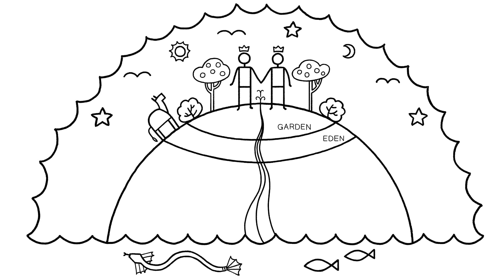
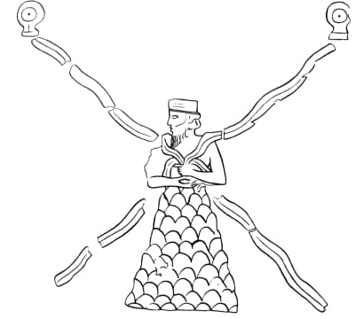
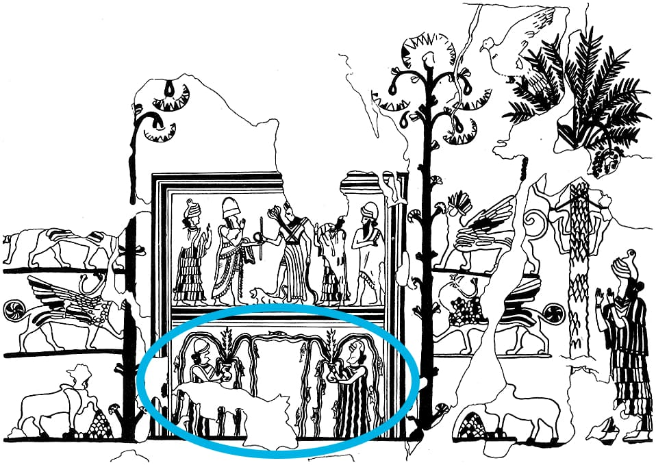
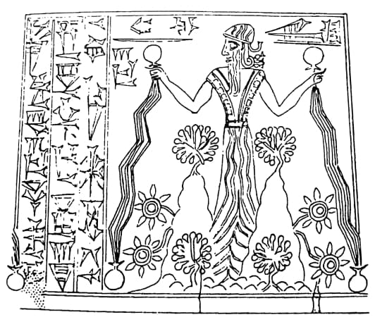

Sessão 11: Humanos Formados do PóSession 11: Humans Formed From Dust
Principais LiçõesKey Takeaways
- Humanos são formados do pó, e isso significa que eles são do reino da frágil mortalidade.Humans are formed from dust and this signifies that they are from the realm of frail mortality.
- As águas de Gênesis 1 e as águas de Gênesis 2 criam uma declaração combinada de Yahweh como o mestre das águas do caos — aquele que pode transformá-las em uma fonte de vida.The Genesis 1 waters and the Genesis 2 waters create a combined statement of Yahweh as the master of the chaos waters—the one who can turn them into a source of life.
Gênesis 2:7: Humanidade Formada do BarroGenesis 2:7: Humanity Formed From Clay
Há dois motivos bíblicos sobre a natureza humana cujos começos estão enraizados na linguagem e imagética de Gênesis 2:7: "E Yahweh formou (וייצר) o humano de pó (עפר) da terra". Esta linha está descrevendo uma criação literal do primeiro humano focando na substância material da qual ele foi feito? Ou é uma descrição arquetípica que foca na natureza e mortalidade da espécie humana como um todo? Para responder a essas questões interpretativas, vamos focar nas palavras-chave "formou" (yatsar) e "pó" (aphar) e fazer duas perguntas. 1. A forma verbal foca comumente na substância material? 2. "Formado do pó" é usado para descrever apenas o humano de Gênesis 2, ou inclui outros humanos também?There are two biblical motifs about human nature whose beginnings are rooted in the language and imagery of Genesis 2:7: "And Yahweh formed (וייצר) the human of dust (עפר) from the ground." Is this line describing a literal creation of the first human by focusing on the material substance from which he was made? Or is this an archetypal description that focuses on the nature and mortality of the human species as a whole? To answer these interpretive questions, let's focus on the key words "formed" (yatsar) and "dust" (aphar) and ask two questions. 1. Does the verb form commonly focus on material substance? 2. Is "formed of dust" used to describe only the human of Genesis 2, or does it include other humans as well?
Estudo de Palavra: Formou — YatsarWord Study: Formed — Yatsar
O verbo yatsar foca exclusivamente na substância material do que é criado? O verbo aparece 45 vezes no hebraico bíblico. E toma uma variedade de objetos diretos, nem todos materiais. 2 Reis 19:25 (ESV): "Você não ouviu que eu fiz isso há muito tempo? Eu o formei desde dias antigos, o que agora faço acontecer, para reduzir cidades fortificadas a montes de ruínas..." Aqui, a palavra refere-se a uma série de eventos providencialmente arranjados por Deus (Is 22:11; 46:11). Isaías 27:11 (NVI): "Pois este é um povo sem entendimento; por isso o seu Criador não tem compaixão dele, e aquele que o formou não lhe demonstra favor."Does the verb yatsar focus exclusively on the material substance of what is created? The verb appears 45 times in biblical Hebrew. And it takes a variety of direct objects, not all of which are material. 2 Kings 19:25 (ESV): "Have you not heard that I made it long ago? I formed it from days of old what now I bring to pass, that you should turn fortified cities into heaps of ruins ..." Here, the word refers to a series of events providentially arrange by God (Isa. 22:11; 46:11). Isaiah 27:11 (NIV): "For this is a people without understanding; so their maker has no compassion on them, and the one who formed them shows them no favor."
Isaías 43:1 (NVI): "Mas agora, assim diz o SENHOR, que te criou, Jacó, que te formou, Israel: 'Não temas, porque eu te remi; chamei-te pelo teu nome, tu és meu.'" A nação inteira de Israel foi formada e feita por Yahweh (Is 29:16; 43:7, 10, 21; 44:21, 24; Sal 95:5). Isaías 45:6-7 (NVI): "Eu sou Yahweh, e não há outro. Eu formo a luz e crio as trevas, trago o bem e crio o mal; eu, o SENHOR, faço todas essas coisas." Aqui, a palavra é usada para descrições metafóricas de eventos históricos de abundância e paz ou guerra e derrota (Jr 18:1-10). Isaías 45:18 (NVI): "Pois assim diz o SENHOR, que criou os céus, ele é Deus; que formou a terra, e a fez; ele a estabeleceu; não a criou para ser vazia, mas a formou para ser habitada — ele diz: 'Eu sou o SENHOR, e não há outro.'" O cosmos inteiro é formado por Yahweh (Jr 18:1-10; 33:2). Amós 4:13 (NVI): "Aquele que forma os montes, que cria o vento, e que revela seus pensamentos à humanidade, que transforma a aurora em escuridão, e pisa nos lugares altos da terra — o SENHOR, o Deus Todo-poderoso é o seu nome." As montanhas e o vento são elementos dentro do cosmos. Amós 7:1 (NVI): "Isto foi o que o Soberano SENHOR me mostrou: Ele estava formando enxames de gafanhotos depois que a colheita do rei tinha sido feita e quando as safras tardias estavam surgindo." Aqui, a palavra é usada para descrever as ações de Yahweh sobre enxames de gafanhotos. Zacarias 12:1 (NAA): "Assim declara o Senhor, que estende os céus, lança os alicerces da terra, e forma o sopro do homem dentro dele..." O sopro de vida que anima os humanos também foi formado por Yahweh. Salmo 74:16-17 (NVI): "Tua é a luz do dia; tua é também a noite; tu estabeleceste o sol e a lua. Tu mesmo fixaste todos os limites da terra; formaste tanto o verão quanto o inverno." Verão, inverno e as ordens sazonais do tempo são formados por Yahweh. Salmo 139:16 (NVI): "Teus olhos viram o meu corpo ainda informe; todos os meus dias foram escritos no teu livro antes que um deles viesse a existir." Os "dias" de uma pessoa, isto é, o curso de sua vida, são formados por Deus.Isaiah 43:1 (NIV): "But now, this is what the LORD says—he who created you, Jacob, he who formed you Israel: 'Do not fear, for I have redeemed you; I have summoned you by name; you are mine.'" The entire nation of Israel was formed and made by Yahweh (Isa. 29:16; 43:7, 10, 21; 44:21, 24; Ps. 95:5). Isaiah 45:6-7 (NIV): "I am Yahweh, and there is no other. I form the light and create darkness, I bring good and create bad; I, the LORD, do all these things." Here, the word is used for metaphorical descriptions of historical events of abundance and peace or war and defeat (Jer. 18:1-10). Isaiah 45:18 (NIV): "For this is what the LORD says—he who created the heavens, he is God; he who formed the land, and made it; he founded it; he did not create it to be empty, but formed it to be inhabited—he says: 'I am the LORD, and there is no other.'" The entire cosmos is formed by Yahweh (Jer. 18:1-10; 33:2). Amos 4:13 (NIV): "He who forms the mountains, who creates the wind, and who reveals his thoughts to mankind, who turns dawn to darkness, and treads on the heights of the earth—the LORD God Almighty is his name." The mountains and the wind are elements within the cosmos. Amos 7:1 (NIV): "This is what the Sovereign LORD showed me: He was forming swarms of locusts after the king's share had been harvested and just as the late crops were coming up." Here, the word is used to describe Yahweh's actions on swarms of locusts. Zechariah 12:1 (NASB): "Thus declares the Lord who stretches out the heavens, lays the foundation of the earth, and forms the breath of a human within him ..." The breath of life that animates humans was also formed by Yahweh. Psalm 74:16-17 (NIV): "The day is yours, and yours also the night; you established the sun and moon. It was you who set all the boundaries of the earth; you formed both summer and winter." Summer, winter, and seasonal orders of time are formed by Yahweh. Psalm 139:16 (NIV): "Your eyes saw my unformed body; all the days you formed for me were written in your book before one of them came to be." A person's "days," that is, the course of their lives, are formed by God.
Não é sobre literal versus não literal. A palavra hebraica para "formou" pode se referir à criação de um objeto material, mas parece ter um significado mais amplo de Deus ordenando o cosmos e providencialmente fazendo as coisas acontecerem no lugar e no tempo certos para seus propósitos. Esse é o padrão.It's not about literal versus non-literal. The Hebrew word for "formed" can refer to the creation of a material object, but it seems to have a broader meaning of God ordering the cosmos and providentially bringing things to be at the right place and the right time for his purposes. That's the pattern.
Estudo de Palavra: Pó e BarroWord Study: Dust and Clay
O pó descreve a substância material única do primeiro humano, ou é uma descrição arquetípica da natureza e mortalidade da criatura humana? As palavras "pó" e "barro" são regularmente usadas para descrever a humanidade como um todo e cada humano, não apenas o humano em Gênesis 2. Gênesis 3:19 (NAA): "No suor do rosto comerás o teu pão, até que voltes à terra, pois dela foste tomado; porque tu és pó, e ao pó voltarás." Salmo 103:14 (NAA): "Pois ele bem sabe da nossa estrutura; lembra-se de que somos pó." Jó 33:4-6 (NAA): "O Espírito (רוח) de Deus me fez, e o sopro (נשמה) do Todo-poderoso me dá vida. Refute-me, se pode; ponha-se em ordem diante de mim, tome a sua posição. Eis que sou de Deus como você; também eu fui modelado do barro."Does dust describe the unique material substance of the first human, or is this an archetypal description of the nature and mortality of the human creature? The words "dust" and "clay" are regularly used to describe humanity as a whole and every human, not just the human in Genesis 2. Genesis 3:19 (NASB): "By the sweat of your face you will eat bread, till you return to the ground, because from it you were taken; for you are dust, and to dust you shall return." Psalm 103:14 (NASB): "For he himself knows our form; he is mindful that we are but dust." Job 33:4-6 (NASB): "The Spirit/Breath (רוח) of God has made me, and the breath (נשמה) of the Almighty gives me life. Refute me if you can; array yourselves before me, take your stand. Behold, I belong to God like you; I too have been pinched out of the clay."
Salmo 119:73 (NAA): "Tuas mãos me fizeram e me formaram; dá-me entendimento, para que aprenda os teus mandamentos." Jó 4:19 (NAA): "Quanto mais àqueles que habitam em casas de barro (חמר), cujo fundamento é no pó (עפר), que são esmagados antes da traça!" Jó 10:8-9 (NAA): "Tuas mãos me formaram e me fizeram completamente, e me destruirias? Lembra-te agora de que me fizeste como barro; e me tornarias em pó novamente?" Isaías 64:8 (NAA): "Mas tu, SENHOR, és nosso Pai. Nós somos o barro, e tu és o oleiro; nós todos somos obra das tuas mãos." Observe que em todos esses textos, a linguagem da narrativa do Éden é usada para descrever a natureza de toda a humanidade.Psalm 119:73 (NASB): "Your hands made me and fashioned me; give me understanding, that I may learn your commandments." Job 4:19 (NASB): "How much more those who dwell in houses of clay (חמר), whose foundation is in the dust (עפר), who are crushed before the moth!" Job 10:8-9 (NASB): "Your hands fashioned and made me altogether, and would you destroy me? Remember now, that you have made me as clay; and would you turn me into dust again?" Isaiah 64:8 (NASB): "Yet you, LORD, are our Father. We are the clay, you are the former/potter; we are all the work of your hand." Notice that in all these texts, the language of the Eden narrative is used to describe the nature of all humanity.
Adão, Arquétipo, e Ser Formado do PóAdam, Archetype, and Being Formed From Dust
"Ser formado do pó é uma declaração sobre a [nossa] essência e identidade, não sobre nossa substância. Nisso, Adão é um arquétipo ... Se todos nós somos formados do pó, mas ao mesmo tempo nascemos de uma mãe através de um processo normal de nascimento, podemos ver que ser formado do pó, embora verdadeiro para cada um de nós, não é uma declaração sobre a origem material de cada um de nós. Pode-se nascer de uma mulher e ainda assim ser formado do pó; todos nós somos. ... 'Formado do pó' não é uma declaração de origens materiais para nenhum de nós, e não há razão para pensar que é uma declaração das origens materiais de Adão. Para Adão, como para todos nós, que somos formados do pó faz uma declaração sobre nossa identidade como mortais. Visto que pertence a todos nós, é arquetípico.""Being formed from dust is a statement about [human] essence and identity, not our substance. In this, Adam is an archetype ... If we are all formed from dust, yet at the same time we are born of a mother through a normal birth process, we can see that being formed from dust, while true of each of us, is not a statement about each of our material origins. One can be born of a woman yet still be formed from dust; all of us are. ... 'Formed from dust' is not a statement of material origins for any of us, and there is no reason to think that it is a statement of Adam's material origins. For Adam, as for all of us, that we are formed from dust makes a statement about our identity as mortals. Since it pertains to all of us, it is archetypal."
Walton, John H. (2015). The Lost World of Adam and Eve: Genesis 2-3 and the Human Origins Debate. IVP Academic.Walton, John H. (2015). The Lost World of Adam and Eve: Genesis 2-3 and the Human Origins Debate. IVP Academic: An Imprint of InterVarsity Press.
Definindo "Arquétipo"Defining "Archetype"
"Arquétipo" é uma palavra composta de duas palavras gregas. 1. Arche: primeiro, princípio. 2. Tupos: padrão. Um arquétipo é um evento, pessoa, lugar ou coisa que iniciará uma série de padrões. A função do arquétipo é que o que acontece na instância inicial estará em comum com todas as iterações posteriores do padrão."Archetype" is a compound word from two Greek words. 1. Arche: first, beginning. 2. Tupos: pattern. An archetype is an event, person, place, or thing that will begin a series of patterns. The function of the archetype is that what happens in the initial instance will be in common with all later iterations of the pattern.
O significado literal da declaração de que os humanos são formados do pó é que os humanos são do reino da morte e mortalidade — de vida não eterna. Para ter vida eterna, algo mais precisa acontecer.The literal meaning of the statement that humans are formed of the dust is that humans are from the realm of death and mortality—of non-eternal life. To have eternal life, something else needs to happen.
As Águas do PotencialThe Waters of Potential
Tanto a terra quanto a água podem ser vistas como mortalidade caótica e desorganizada ou fontes de morte, mas também podem ser vistas como fontes de vida e possibilitadoras de prosperidade. Nesta passagem, vemos Yahweh como o agente através do qual o caos desorganizado se torna bondade organizada. As águas de Gênesis 1 e as águas de Gênesis 2 formam uma declaração combinada de Yahweh como o mestre das águas do caos que pode transformá-las em uma fonte de vida. Quando qualquer história acontece num poço ou numa fonte, é uma imagem do Éden que tudo começa com aquele fluxo em Gênesis 2.Both land and water could be seen as chaotic and disorganized mortality or sources of death, but they can also be seen as sources of life and enablers of prosperity. In this passage, we see Yahweh as the agent through which disorganized chaos becomes organized goodness. The Genesis 1 waters and the Genesis 2 waters form a combined statement of Yahweh as the master of the chaos waters who can turn them into a source of life. When any story happens at a well or a spring, it's an Eden picture that all starts with that stream in Genesis 2.
Éden e a Geografia de Três Partes da Terra em Gênesis 2:4-17Eden and the Three-Part Geography of the Land in Genesis 2:4-17
Já estabelecemos a existência das águas acima e abaixo e da terra seca em Gênesis 1. Agora vemos uma geografia mais detalhada se desdobrar em Gênesis 2:8-9. 1. Região do Éden. 2. Jardim na região do Éden. 3. Árvores no meio do jardim.We've already established the existence of the waters above and below and the dry land in Genesis 1. Now we see a more detailed geography unfold in Genesis 2:8-9. 1. Region of Eden. 2. Garden in the region of Eden. 3. Trees in the middle of the garden.
Embora os humanos tenham sido formados no reino do pó/não-vida, foram colocados no jardim com acesso à árvore da vida. Aos humanos é dada a chance de ter vida eterna, mas eles a perdem. A história do jardim do Éden é sobre um ideal nunca realizado, não perfeição perdida. A história bíblica não é: O universo costumava ser perfeito, mas então dois humanos fizeram algo errado que introduziu a morte e tudo de desagradável. A história bíblica é: Deus criou um espaço para seus humanos se aliarem ao projeto divino de espalhar vida e ordem a partir do reino do caos e da não-ordem.Although the humans were formed in the realm of dust/non-life, they were placed in the garden with access to the tree of life. The humans are given the chance to have eternal life, but they forfeit it. The garden of Eden story is about an ideal never realized, not perfection lost. The biblical story is not: The universe used to be perfect, but then two humans did something wrong that introduced death and everything unpleasant. The biblical story is: God created a space for his humans to partner with the divine project to spread life and order out of the realm of chaos and non-order.
Os Rios de Gênesis 2:10-14The Rivers of Genesis 2:10-14
A descrição do rio primordial em Gênesis 2:10-14 tem um design literário intencional. Cada rio é descrito com comprimento decrescente, imitando uma fonte correndo pela terra. Cada um dos nomes está associado a várias regiões do mapa bíblico antigo.The description of the primordial river in Genesis 2:10-14 has an intentional literary design. Each river is described with decreasing length, imitating a spring running out over the land. Each of the names is associated with various regions of the ancient biblical map.
| RioRiver | RegiãoRegion | Povos e ImpériosPeople Groups and Empires |
|---|---|---|
| Pishon | Havilá = Sul e Leste de Canaã, a borda NO do deserto arábicoHavilah = South and East of Canaan, the NW edge of the Arabian desert | Cainitas, Ismaelitas, Edomitas, ÁrabesCainites, Ishmaelites, Edomites, Arabs |
| Gihon | Cuxe = Sul do Egito, o Nilo superior, EtiópiaCush = Southern Egypt, the upper Nile, Ethiopia | Egípcios e EtíopesEgyptians and Ethiopians |
| Hidéquel | Assíria = O rio TigreAssyria = The Tigris River | AssíriaAssyria |
| Eufrates | Planícies da BabilôniaBabylonian flood plains | BabilôniaBabylon |
Este rio proveniente do Éden prepara o leitor a ver cada uma dessas regiões (Egito, Jerusalém e arredores, e Mesopotâmia) como extensões das águas vivificantes do Éden e lugares agraciados com a vida do Éden. Isso faz todo o sentido das analogias do Éden aplicadas a Canaã (Gn 13:10), Mesopotâmia (Gn 11:1-4) e Egito (Gn 13:10; 45:18, 20).This Eden-sourced river prepares the reader to view each of these regions (Egypt, Jerusalem and surroundings, and Mesopotamia) as extensions of Eden's life-giving waters and places that are graced with the life of Eden. This makes perfect sense of the Eden analogies applied to Canaan (Gen. 13:10), Mesopotamia (Gen. 11:1-4), and Egypt (Gen. 13:10; 45:18, 20).
Rio 1: O Pishon (2:11-12). O Pishon recebe a descrição mais longa, preparando o leitor para entender o significado de histórias futuras. "Contorna a terra de Havilá": É onde os descendentes de Ismael se estabelecerão (Gn 25:18) e onde Agar vagará em sua fuga de Sara (Gn 16:7). "Ouro bom" + "resina aromática" + "pedra ônix": Todos estão associados aos dons simbólicos do Éden dados a Israel em suas peregrinações no deserto. Ouro é providenciado para o tabernáculo. Resina aromática (בדלח) é mencionada no aparecimento do maná (Êx 16:33; Nm 11:7). Pedras ônix (אבן שהם) estão no éfode do sumo sacerdote (Êx 25:7; 28:9).River 1: The Pishon (2:11-12). The Pishon is given the longest description, which prepares the reader for understanding the significance of future stories. "Goes around the land of Havilah": This is where Ishmael's descendants will settle (Gen. 25:18) and where Hagar will wander in her flight from Sarah (Gen. 16:7). "Good gold" + "aromatic resin" + "onyx stone": These are all associated with the symbolic Eden gifts given to Israel in their wilderness wanderings. Gold is provided for the tabernacle. Aromatic resin (בדלח) is mentioned in the appearance of the manna (Exod. 16:33; Num. 11:7). Onyx stones (אבן שהם) are in the high priest's ephod (Exod. 25:7; 28:9).
Tesouro Fora do Jardim? Há significância no fato de esses tesouros não estarem localizados no jardim, mas apenas fora dele? Isso comunica que o jardim cria valor no mundo mas não deve ser confundido com aqueles tesouros reais? Devemos ver esses tesouros como sinais de que se está perto do jardim, mas que não devem ser identificados com o verdadeiro tesouro do jardim, a saber, que se pode estar com Deus ali? [sugestão de Jacob Stromberg]Treasure Outside the Garden? Is there significance in the fact that these treasures are not located in the garden, but just outside it? Does this communicate that the garden creates value in the world but is not to be mistaken with those actual treasures? Are we to view these treasures as signals that one is near to the garden, but that these should not be identified with the real treasure of the garden, namely that one can be with God there? [suggestion from Jacob Stromberg]
Rio 2: O Gihon (2:13). O Gihon está associado à terra de Cuxe, que tem múltiplos referentes na Bíblia Hebraica. Sul do Egito (Etiópia moderna): 2 Reis 19:9; Ester 1:1; 8:9; Sal 68:31; Is 18:1; 20:3-5; 45:14; Ez 29:10; 30:4-5, 9; Na 3:9. O filho de Cão, cujos descendentes são pessoas do sul do Egito (Gn 10:6-7). Mas este mesmo Cuxe é o pai de Ninrode, que vai para leste da Mesopotâmia construir os impérios da Assíria e Babilônia. O nome da fonte/rio Gihon só é associado em outro lugar à fonte que supre água a Jerusalém e ao templo (1 Cr 32:30; 33:14), que é onde Salomão foi coroado rei de Israel (1 Reis 1:33, 38, 45).River 2: The Gihon (2:13). The Gihon is associated with the land of Cush, which has multiple referents in the Hebrew Bible. Southern Egypt (modern Ethiopia): 2 Kgs. 19:9; Esther 1:1; 8:9; Ps. 68:31; Isa. 18:1; 20:3-5; 45:14; Ezek. 29:10; 30:4-5, 9; Nah. 3:9. The son of Ham, whose descendants are people of southern Egypt (Gen. 10:6-7). But this very Cush is the father of Nimrod, who goes east to Mesopotamia to build the empires of Assyria and Babylon. The name of Gihon spring/river is only elsewhere associated with the spring that supplies water to Jerusalem and the temple (1 Chron. 32:30; 33:14), which is where Solomon was crowned king of Israel (1 Kgs. 1:33, 38, 45).
Rios 3 e 4: O Hidéquel e o Eufrates (2:14). O Hidéquel e o Eufrates estão associados a dois impérios mesopotâmios. O Tigre flui "a leste da Assíria". E o Eufrates é deixado à imaginação do leitor, o que é claro, deve trazer Babilônia à mente. "A descrição dos rios foi delineada em forma de 'decrescendo', pois cada descrição sucessiva se torna mais e mais curta ... O mesmo padrão é evidente nas contagens de palavras hebraicas, pois as quatro descrições de rios são dadas em 20, 10, 8 e 4 palavras hebraicas sucessivamente. A descrição do segundo rio (10 palavras) é exatamente metade do comprimento da primeira (20 palavras), e a quarta (4 palavras) é metade da terceira (8 palavras). A impressão desta característica mais marcante de Gn 2:10-14 é precisamente a de uma fonte jorrando e se dissipando conforme flui por toda a terra — isto é, os versículos 11-14 demonstram literariamente o que é declarado explicitamente no versículo 10." Morales, L.M. (2012). The Tabernacle Pre-Figured: Cosmic Mountain Ideology in Genesis and Exodus. Peeters Publishers.Rivers 3 and 4: The Hideqel and Euphrates (2:14). The Hideqel and Euphrates are associated with two Mesopotamian empires. The Tigris flows "to the east of Assyria." And the Euphrates is left to the reader's imagination, which is of course supposed to bring Babylon to mind. "The description of the rivers has been outlined in 'decrescendo' form, as each successive description becomes shorter and shorter … The same pattern is evident in Hebrew word counts, as the four river descriptions are given in 20, 10, 8, and 4, Hebrew words successively. The second river's description (10 words) is exactly half the length of the first (20 words), and the fourth (4 words) is half the length of the third (8 words). The impression of this most striking feature of Gen. 2:10-14 is precisely that of a spring welling up and dissipating as it flows out all over the land—that is, verses 11-14 demonstrate literarily what is stated explicitly in verse 10." Morales, L.M. (2012). The Tabernacle Pre-Figured: Cosmic Mountain Ideology in Genesis and Exodus. Peeters Publishers.
Éden como uma Montanha CósmicaEden as a Cosmic Mountain
A descrição do Éden como um lugar alto, do qual flui um rio de vida divina que provê vida para todas as nações, é fundamental para a história bíblica. Éden é "Céu na Terra" na forma de um lugar alto cósmico, onde a vida do Céu é una com a Terra. Gênesis 2:10 Tradução do Instrutor: "Ora, um rio saía do Éden para regar o jardim; e dali se dividia e se tornava quatro cabeças..." Éden é um lugar alto o suficiente para um rio fluir para regar várias regiões distantes da terra. Ezequiel 28:13-14 (NAA): "Estavas no Éden, jardim de Deus ... estavas no monte santo de Deus."The depiction of Eden as a high place, from which flows a river of divine life that provides life for all of the nations, is foundational for the biblical storyline. Eden is "Heaven on Earth" in the form of a cosmic high place, where the life of Heaven is one with Earth. Genesis 2:10 Instructor's Translation: "Now, a river went out from Eden to water the garden; and from there it separated and became four heads …" Eden is a high enough place for a river to flow out to water various distant regions of the land. Ezekiel 28:13-14 (NASB): "You were in Eden, the garden of God ... you were on the holy mountain of God."
Êxodo 24:16-18 (NAA): "16 A glória do SENHOR repousou sobre o monte Sinai, e a nuvem o cobriu por seis dias; e no sétimo dia chamou a Moisés do meio da nuvem. 17 Aos olhos dos filhos de Israel, a aparência da glória do SENHOR era como fogo consumidor no topo do monte. 18 Moisés entrou no meio da nuvem, subindo o monte; e Moisés esteve no monte quarenta dias e quarenta noites." Êxodo 25:8-9 (NAA): "Façam um santuário para mim, para que eu habite no meio deles. Conforme tudo o que eu lhe mostrar, como o modelo do tabernáculo e o modelo de toda a sua mobília, assim vocês o farão." Os planos para o tabernáculo, que foi desenhado como um micro-Éden, foram revelados a Moisés no topo do monte Sinai, onde ele encontrou Yahweh na árvore ardente.Exodus 24:16-18 (NASB): "16 The glory of the LORD rested on Mount Sinai, and the cloud covered it for six days; and on the seventh day he called to Moses from the midst of the cloud. 17 And to the eyes of the sons of Israel the appearance of the glory of the LORD was like a consuming fire on the mountain top. 18 Moses entered the midst of the cloud as he went up to the mountain; and Moses was on the mountain forty days and forty nights." Exodus 25:8-9 (NASB): "Let them construct a sanctuary for me, that I may dwell among them. According to all that I am going to show you, as the pattern of the tabernacle and the pattern of all its furniture, just so you shall construct it." The plans for the tabernacle, which was designed as a micro-Eden, were revealed to Moses on top of Mount Sinai, where he encountered Yahweh in the burning tree.
Joel 2:1-3 (NVI): "Toquem a trombeta em Sião, soem o alarme no meu monte santo ... diante deles [o exército] a terra é como o jardim do Éden; atrás deles, um deserto desolado." Isaías 51:3 (NVI): "O SENHOR certamente confortará Sião e olhará com compaixão sobre todas as suas ruínas; ele fará dos seus desertos como Éden, dos seus ermos como o jardim do SENHOR." Alegria e regozijo se encontrarão nela, ações de graças e som de canto. Ezequiel 36:34-35 (NAA): "A terra desolada será cultivada em vez de ser uma desolação à vista de todos que passam. Dirão: 'Esta terra desolada tornou-se como o jardim do Éden; e a cidade desolada, arruinada e em ruínas está fortificada e habitada.'" O templo de Jerusalém, que foi desenhado para ser Céu/Éden na terra, foi construído no monte Sião, uma colina alta que é constantemente comparada a Éden.Joel 2:1-3 (NIV): "Blow the trumpet in Zion, sound the alarm on my holy mountain ... before them [the army] the land is like the garden of Eden; behind them, a desert wasteland." Isaiah 51:3 (NIV): "The LORD will surely comfort Zion and will look with compassion on all her ruins; he will make her deserts like Eden, her wastelands like the garden of the LORD." Joy and gladness will be found in her, thanksgiving and the sound of singing. Ezekiel 36:34-35 (NASB): "The desolate land will be cultivated instead of being a desolation in the sight of everyone who passes by. They will say, 'This desolate land has become like the garden of Eden; and the waste, desolate and ruined cities are fortified and inhabited.'" The Jerusalem temple, which was designed to be Heaven/Eden on earth, was built on Mount Zion, a high hill which is constantly likened to Eden.
Salmo 46:4 (NVI): "Há um rio cujas correntes alegram a cidade de Deus, o lugar santo onde habita o Altíssimo." Salmo 48:1-2 (NVI): "Grande é o SENHOR, e digno de todo louvor, na cidade do nosso Deus, o seu santo monte. Formoso em sua elevação, a alegria de toda a terra, como os cumes de Zafom é o monte Sião, a cidade do grande Rei." Ezequiel 47:1-12 (NVI): "1 O homem me trouxe de volta à entrada do templo, e vi água saindo de debaixo do limiar do templo para o leste (pois o templo enfrentava o leste). A água descia do lado sul do templo, ao sul do altar ... 5 Ele mediu mais mil, mas agora era um rio que eu não podia atravessar, porque a água tinha subido e estava funda o suficiente para nadar — um rio que ninguém podia cruzar. 6 Ele me perguntou: 'Filho do homem, você vê isto?'" O rio flui para a região oriental e desce para a Arabá, onde entra no Mar Morto. Quando esvazia no mar, a água salgada se torna fresca. Enxames de criaturas vivas viverão onde o rio fluir. Árvores de todo tipo crescerão em ambas as margens. Suas folhas não murcharão, nem seu fruto falhará. Todo mês darão fruto, porque as águas do santuário correm para elas. Seu fruto servirá de alimento e suas folhas de cura.Psalm 46:4 (NIV): "There is a river whose streams make glad the city of God, the holy place where the Most High dwells." Psalm 48:1-2 (NIV): "Great is the LORD, and most worthy of praise, in the city of our God, his holy mountain. Beautiful in its loftiness, the joy of the whole earth, like the heights of Zaphon is Mount Zion, the city of the great king." Ezekiel 47:1-12 (NIV): "1 The man brought me back to the entrance to the temple, and I saw water coming out from under the threshold of the temple toward the east (for the temple faced east). The water was coming down from under the south side of the temple, south of the altar ... 5 He measured off another thousand, but now it was a river that I could not cross, because the water had risen and was deep enough to swim in—a river that no one could cross. 6 He asked me, 'Son of man, do you see this?'" The water flows toward the eastern region and goes down into the Arabah, where it enters the Dead Sea. When it empties into the sea, the salty water there becomes fresh. Swarms of living creatures will live wherever the river flows. Fruit trees of all kinds will grow on both banks. Their leaves will not wither, nor will their fruit fail. Every month they will bear fruit, because the water from the sanctuary flows to them. Their fruit will serve for food and their leaves for healing.
Joel 3:18 (NAA): "E naquele dia, os montes gotejarão vinho doce, e os outeiros manarão leite, e todos os ribeiros de Judá manarão água; e uma fonte sairá da casa do SENHOR para regar o vale de Sitim." Apocalipse 21:10 (NAA): "E ele me levou em espírito a um monte grande e alto, e me mostrou a santa cidade, Jerusalém, descendo do céu da parte de Deus." Apocalipse 22:1 (NAA): "Então ele me mostrou um rio da água da vida, claro como cristal, que procedia do trono de Deus e do Cordeiro." A Jerusalém celestial, isto é, Éden renovado na Terra, é descrita como uma cidade-jardim em um monte alto que flui com o rio da vida.Joel 3:18 (NASB): "And in that day, the mountains will drip with sweet wine, and the hills will flow with milk, and all the brooks of Judah will flow with water; and a spring will go out from the house of the LORD to water the valley of Shittim." Revelation 21:10 (NASB): "And he carried me away in the Spirit to a mountain great and high, and he showed me the holy city, Jerusalem coming down out of heaven from God." Revelation 22:1 (NASB): "Then he showed me a river of the water of life, clear as crystal coming from the throne of God and of the Lamb." The heavenly Jerusalem, that is, renewed Eden on Earth, is described as a high mountain garden-city that flows with the river of life.
"Em Gênesis 2-3, Éden não é explicitamente descrito como uma montanha, mas isso pode ser melhor entendido por uma leitura cuidadosa de muitos textos bíblicos que identificam simbolicamente Éden com Sião. Através do ritual do templo no monte Sião, as imagens cósmicas do Éden tornaram-se uma realidade terrena. Gênesis 2:10-14 menciona os quatro grandes rios que procedem do Éden e regam toda a terra. Um desses fluxos cósmicos é o Gihon, que aparece em outro lugar na Bíblia Hebraica apenas em referência à principal fonte de água de Jerusalém ... Essa conexão entre o Gihon do Éden e de Jerusalém não é o resultado de um modo de pensamento confuso ou ilógico por parte dos autores bíblicos. Essa correspondência simbólica reflete a importância cósmica e espiritual de Sião ... A imagem do rio cósmico de Jerusalém não é mais inadequada do que imagens similares aplicadas a Jerusalém no Salmo 48:1-3 ('Formoso em sua elevação, a alegria de toda a terra, o monte Sião no extremo norte') ou Isaías 2:1-4 ('O monte Sião será exaltado como o mais alto de todos os montes da terra'). No mundo simbólico das liturgias do templo de Israel, o espaço ordinário tornou-se espaço sagrado, a pequena fonte de água da cidade tornou-se um rio cósmico, e o pequeno monte de Jerusalém tornou-se o monte Sião, o monte mais alto da terra, e Jerusalém, uma cidade periférica no mundo antigo, tornou-se o centro da terra (Ez 38:12).""In Genesis 2-3, Eden is not explicitly described as a mountain, but this can be best understood by a careful reading of many biblical texts that symbolically identity Eden with Zion. Through the temple ritual on Mount Zion, the cosmic images of Eden became an earthly reality. Genesis 2:10-14 mentions the four great rivers that proceed from Eden and water all the earth. One of these cosmic streams is the Gihon, which appears only elsewhere in the Hebrew Bible in reference to the main source of Jerusalem's water … This connection between the Gihon of Eden and of Jerusalem is not the result of fuzzy or illogical mode of thought on the part of the biblical authors. This symbolic matching reflects Zion's cosmic and spiritual importance … The image of Jerusalem's cosmic stream is no more inappropriate than similar imagery applied to Jerusalem in Psalm 48:1-3 ("Beautiful in elevation, the joy of the entire earth, Mount Zion in the far north") or Isaiah 2:1-4 ("Mount Zion will be raised up as the highest of all mountains on earth"). In the symbolic world of Israel's temple liturgies, ordinary space became sacred space, the meager water spring of the city became a cosmic river, and the little knoll of Jerusalem became Mount Zion, the highest mountain on the earth, and Jerusalem a peripheral city in the ancient world, became the center of the earth (Ezek. 38:12)."
Anderson, Gary (1988). "The Cosmic Mountain: Eden and Its Early Interpreters in Syriac Christianity," Genesis 1-3 in the History of Exegesis: Intrigue in the Garden. 192-93.Anderson, Gary (1988). "The Cosmic Mountain: Eden and Its Early Interpreters in Syriac Christianity," Genesis 1-3 in the History of Exegesis: Intrigue in the Garden. 192-93.
A Montanha Cósmica e o Rio Primordial no Antigo Oriente PróximoThe Cosmic Mountain and the Primeval River in the Ancient Near East
"No antigo Oriente Próximo, a união do céu e da terra era concebida como uma montanha cuja base era o fundo da terra e cujo topo era o topo do céu, tornando-a o axis mundi ... o centro do mundo ... A montanha cósmica era o lugar de encontro dos deuses, a fonte de água e fertilidade ... o ponto de encontro do céu e da terra. O motif da montanha cósmica aparece na literatura e nos rituais religiosos da Mesopotâmia, Egito, hititas, Canaã e Israel antigo.""In the ancient Near East, the union of heaven and earth was conceived as a mountain whose base was the bottom of the earth and whose peace was the top of heaven, making it the axis mundi ... the center of the world ... The cosmic mountain was the meeting place of the gods, the source of water and fertility ... the meeting place of heaven and earth. The cosmic mountain motif appears in the literature and religious rituals of Mesopotamia, Egypt, the Hittites, Canaan, and ancient Israel."
Morales, L.M. (2012). The Tabernacle Pre-Figured: Cosmic Mountain Ideology in Genesis and Exodus. Peeters Publishers.Morales, L.M. (2012). The Tabernacle Pre-Figured: Cosmic Mountain Ideology in Genesis and Exodus. Peeters Publishers.
"[Os templos do antigo Oriente Próximo] eram a incorporação arquitetônica da montanha cósmica ... [As] pirâmides e zigurates eram representações arquitetônicas do arquétipo da montanha cósmica, frequentemente decoradas com retratos das águas cósmicas e árvores férteis. A conexão entre templos e montanhas cósmicas está relacionada à sua função como elos entre céu e terra, como atestado pelos nomes dos santuários babilônicos ('Montanha da casa', 'Casa da Montanha de todas as Terras'), de modo que o zigurate era literal e simbolicamente uma montanha cósmica.""[Ancient Near Eastern temples] were the architectural embodiment of the cosmic mountain … [The] pyramids and ziggurats were architectonic representations of the archetype of the cosmic mountain, often decorated with portrayals of the cosmic waters and fertile trees. The connection between temples and cosmic mountains is related to their function as links between heaven and earth, as attested by the names of the Babylonian sanctuaries ("Mountain of the house," "House of the Mountain of all Lands"), so that the ziggurat was literally and symbolically a cosmic mountain."
Morales, L.M. (2012). Keel, Othmar; Hallett, Timothy J. (tradutor) (1997). The Symbolism of the Biblical World: Ancient Near Eastern Iconography and the Book of Psalms. Eisenbrauns.Morales, L.M. (2012). Keel, Othmar; Hallett, Timothy J. (translator) (1997). The Symbolism of the Biblical World: Ancient Near Eastern Iconography and the Book of Psalms. Eisenbrauns.
"Uma pintura mural muito interessante de Mari (191) mostra um espaço retangular cercado por um muro ... ladeado por palmeiras e árvores ... quatro querubins, e dois touros. Um pé de cada touro está plantado no topo de uma montanha. As duas montanhas provavelmente indicam que o centro do pátio está localizado em uma montanha. As duas divindades da fonte no retângulo menor correspondem às duas montanhas. Um rio com quatro ramos (como em Gn 2:10) sobe das vasilhas seguradas pelas divindades. Uma planta estilizada cresce do rio. Este é o lugar de onde emana toda a vida. No centro desta região, no retângulo superior, está Ishtar, a deusa da fertilidade, amor e guerra ... Seu pé direito está sobre um leão. O rei está em saudação diante dela. Ela parece estar lhe apresentando anel e cetro. Em todo caso, a imagem retrata todas as partes de um complexo de templo inteiro. O edifício do templo é uma sala ampla com um amplo átrio (cf. 172-73, 207). O átrio e o pátio incorporam todos aqueles recursos que caracterizam o templo como uma esfera de vida. Encontramos esses recursos repetidos — quase sem exceção — no templo de Salomão e na descrição do paraíso: a montanha (Ez 28:13-16), os rios, as árvores, os querubins. Até os touros estão presentes. No templo de Jerusalém eles carregavam o mar de bronze (1 Reis 7:25). A crença na presença do Deus vivo suprindo os pátios do templo com todos os símbolos que já tinham desempenhado um papel no templo de Ishtar em Mari.""A highly interesting wall painting from Mari (191) shows a rectangular space surrounded by a wall … flanked by date palms and trees … four cherubim, and two bulls. One foot of each bull is planted on a mountaintop. The two mountains probably indicate that the center of the court is located on a mountain. The two fountain deities in the lower of the two smaller rectangles correspond to the two mountains. A stream with four branches (as in Gen. 2:10) rises from the vessels held by the deities. A stylized plant grows out of the stream. This is the place from which all life issues. In the center of this region, in the upper rectangle, stands Ishtar, the goddess of fertility, love, and war … Her right foot is set on a lion. The king stands in greeting before her. She appears to be presenting him with ring and staff. In any case, the picture depicts all parts of an entire temple complex. The temple building is a broad room with a wide antechamber (cf. 172-73, 207). The anteroom and the forecourt incorporate all those features which characterize the temple as a sphere of life. We find these features repeated—almost without exception—in the Solomonic temple and in the description of paradise: the mountain (Ezek 28:13-16), the rivers, the trees, the cherubim. Even the bulls are present. In the Jerusalem temple they carried the bronze sea (1 Kgs 7:25). Belief in the presence of the living God supplied the temple forecourts with all the symbols which had already played a role in the Ishtar temple of Mari."
Keel, Othmar; Hallett, Timothy J. (tradutor) (1997). The Symbolism of the Biblical World. Eisenbrauns.Keel, Othmar; Hallett, Timothy J. (translator) (1997). The Symbolism of the Biblical World: Ancient Near Eastern Iconography and the Book of Psalms. Eisenbrauns.
O Padrão de Design do Rio PrimordialThe Design Pattern of the Primeval River
Como o jardim do Éden representa a união do Céu e da Terra, seu rio é retratado como a fonte de toda a fertilidade e abundância do mundo. Quando autores bíblicos posteriores retratam a chegada da libertação de Deus e a restauração de Jerusalém e de toda a criação, não é surpresa que eles recorram a essa imagética de rio. Joel 3:18 (NAA), Isaías 30:23-26 (NVI), Zacarias 14:6-9 (NVI), Salmo 36:7-9 (NVI), Ezequiel 47:1-12 (NVI).Because the garden of Eden represents the union of Heaven and Earth, its river is portrayed as the source of all the world's fertility and abundance. When later biblical authors portray the arrival of God's deliverance and restoration of Jerusalem and all creation, it is no surprise that they draw upon this river imagery. Joel 3:18 (NASB), Isaiah 30:23-26 (NIV), Zechariah 14:6-9 (NIV), Psalm 36:7-9 (NIV), Ezekiel 47:1-12 (NIV).
Isaías 30:23-26 (NVI): "Ele também lhe enviará chuva para a semente que você semear no solo, e o alimento que vem da terra será rico e abundante. Naquele dia o seu gado pastará em pastagens amplas … quando as torres caírem, correntes de água fluirão em todo monte alto e em todo outeiro elevado. A lua brilhará como o sol, e a luz do sol será sete vezes mais forte, como a luz de sete dias inteiros, quando o SENHOR curar as feridas do seu povo e sarar as chagas que ele mesmo infligiu."Isaiah 30:23-26 (NIV): "He will also send you rain for the seed you sow in the ground, and the food that comes from the land will be rich and plentiful. In that day your cattle will graze in broad meadows … when the towers fall, streams of water will flow on every high mountain and every lofty hill. The moon will shine like the sun, and the sunlight will be seven times brighter, like the light of seven full days, when the LORD binds up the bruises of his people and heals the wounds he inflicted."
Zacarias 14:6-9 (NVI): "Naquele dia não haverá luz do sol nem escuridão fria e gélida. Será um dia único—um dia conhecido apenas pelo Senhor—sem distinção entre dia e noite. Quando chegar a tarde, haverá luz. Naquele dia águas vivas fluirão de Jerusalém, metade para o oriente, para o Mar Morto, e metade para o ocidente, para o Mar Mediterrâneo, tanto no verão quanto no inverno. O SENHOR será rei sobre toda a terra. Naquele dia haverá um só SENHOR, e o seu nome será o único nome."Zechariah 14:6-9 (NIV): "On that day there will be neither sunlight nor cold, frosty darkness. It will be a unique day—a day known only to the Lord—with no distinction between day and night. When evening comes, there will be light. On that day living water will flow out from Jerusalem, half of it east to the Dead Sea and half of it west to the Mediterranean Sea, in summer and in winter. The LORD will be king over the whole earth. On that day there will be one LORD, and his name the only name."
Salmo 36:7-9 (NVI): "Quão precioso é o seu amor leal, ó Deus! Os homens se refugiam à sombra das suas asas. Saciam-se da fartura da sua casa; tu os fazes beber do rio das suas delícias. Pois em ti está a fonte da vida; na tua luz vemos a luz."Psalm 36:7-9 (NIV): "How priceless is your unfailing love, O God! People take refuge in the shadow of your wings. They feast on the abundance of your house; you give them drink from your river of delights. For with you is the fountain of life; in your light we see light."
Pergunta para ReflexãoReflection Question




Que ideia está sendo enfatizada em Gênesis 2 quando Deus forma o humano do pó?What idea is being emphasized in Genesis 2 when God forms the human from the dust?